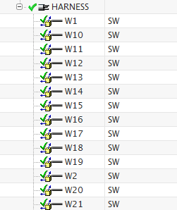
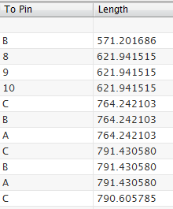
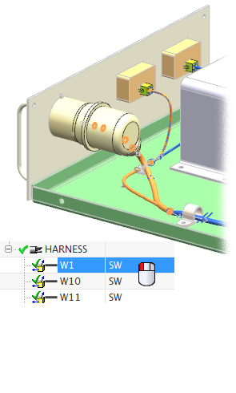

Auto Route the wires
Now that NX knows where each device and connector is in this assembly, you can create the connections between them.
-
If necessary, fit the view.
-
Open the Electrical Connection Navigator
 .
.
-
Right-click any column heading and choose Select All.
-
Right-click any highlighted row and choose Auto Route→Pin Level. Watch the wires closely.
NX runs through every line and creates the connections. When it has finished, you see a green check mark in front of each line.

If you scroll the navigator over to the Length column, you also see that NX has filled in the column with the calculated length of each wire.

Notice in the view that stock has been added to the wire bundles in the harness. You can select an individual row in the navigator and see how it is routed through the harness assembly.

-
Close all parts without saving.